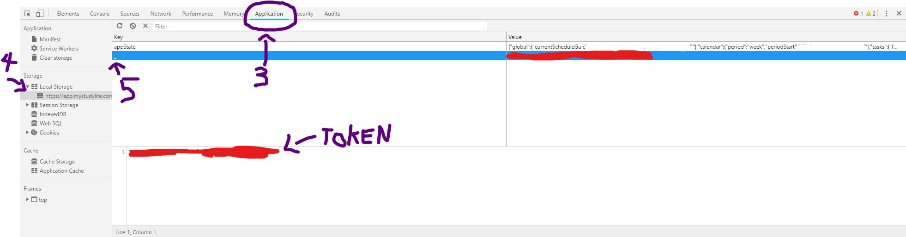
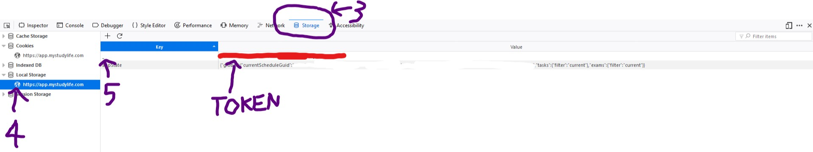
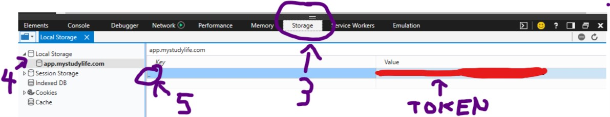

Note: you can try clicking on the "Get Key Automatically" button to obtain the key. If it fails, the following are the manual methods
Step 1: Login to MSL on your browser and follow the following depending on which browser you are using
Google Chrome
Step 2: Press F12 to bring up Developer Tool (or go into Menu->More Tools->Developer Tools)
Step 3: Click on the Application Tab

Mozilla Firefox
Step 2: Press F12 to bring up Developer Tool (or go into Menu->Web Developer->Toggle Tools)
Step 3: Click on the Storage Tab

Microsoft Edge
Step 2: Press F12 to bring up Developer Tool (or go into Menu->More Tools->Developer Tools)
Step 3: Click on the Storage Tab

Other Browsers
Step 2: Press F12 to bring up Developer Tool (or go into Menu->More Tools->Developer Tools) and find the Console tab in your browser
Step 3: Type in (without quotes) "
localStorage.getItem("_")" and copy the output (without the quotes if any is present)
Continue to Step 6 below

Step 4: Expand to Local Storage and click on the MSL URL
Step 5: You will see a key called "_", click on it and copy its Value. That is your Access Token
Step 6: Enter (or paste) the token into the MSL Access Token field and click Save
Step 7: Toggle an option (task and exams/schedule) and enjoy!